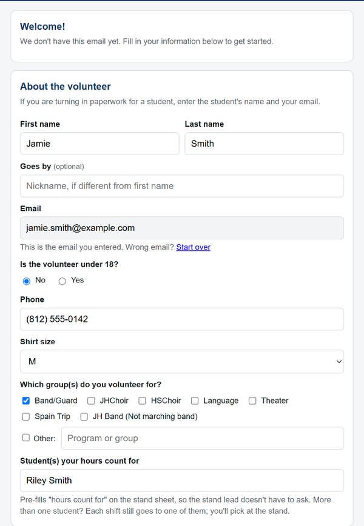
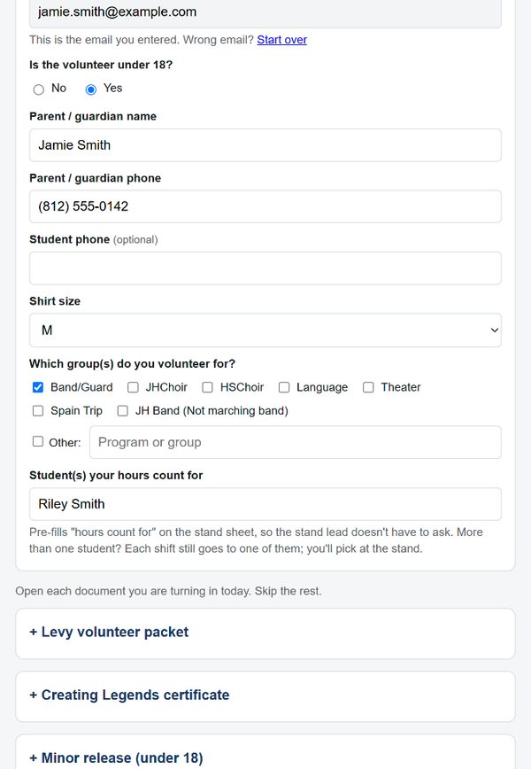
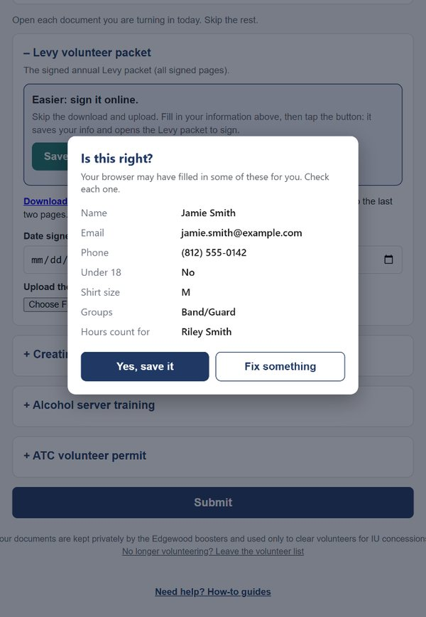
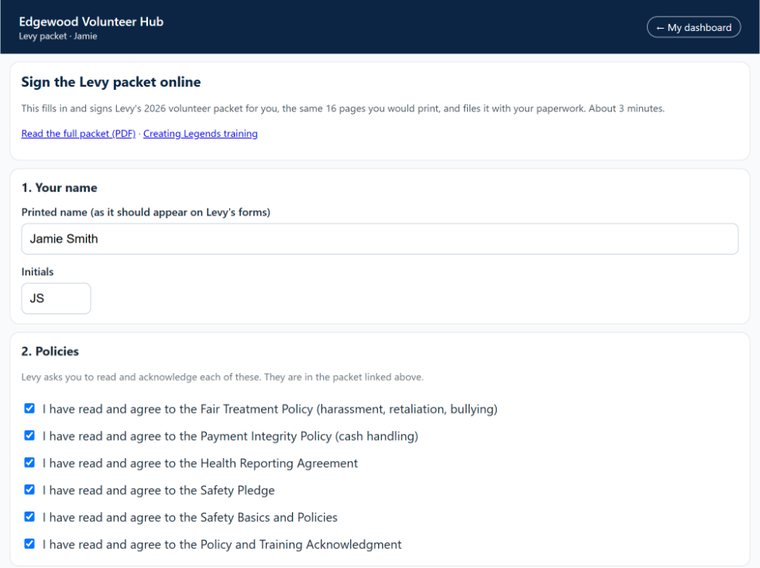
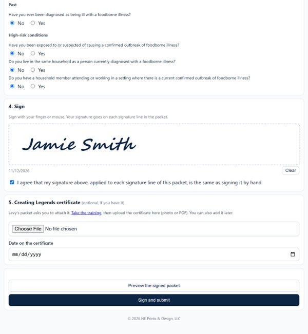

1¾ minutes, with narration. Turn on captions (CC) to watch with the sound off. The volunteer in the video is made up.
Sign in with Google, or type your email
Open edgewood-volunteers.github.io. Tap Sign in with Google, or type your email in the box and tap Open my page. Either one works.

Tap I'm new: sign me up
The Hub doesn't know your email yet, so it offers to sign you up.

Fill in your info
Your email is already filled in (and locked, so it can't get mistyped). Add your name, phone, shirt size and group. In the last box, type the student your hours count for.

Under 18?
Tap Yes and add a parent or guardian name and phone. Your paperwork list adds a Minor release for a parent to sign. If you're turning in paperwork for a student, enter the student's name and your email.

Tap Save my info and sign online
Open Levy volunteer packet and tap Save my info and sign online. It saves your info and opens Levy's packet to sign, with no printing. Already have a signed paper packet? Upload it in the same card and tap Submit instead.

Check it, then tap Yes, save it
Your browser may have filled in something wrong, so check each line. Anything off? Tap Fix something.

Sign Levy's packet
Your name and initials are filled in. Check each policy; the full packet is linked at the top if you want to read it.

Answer, sign, and submit
Answer the health questions, sign with your finger (or mouse), and tap Sign and submit. Your Creating Legends certificate (Levy's online training) can go here now, or you can upload it later.

Find your first shift
Your volunteer page shows any paperwork that's still missing. Once it's done, tap Open spots, pick a spot, and you're on.